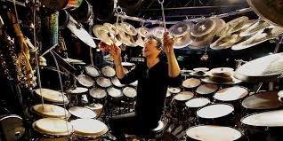

Pages:
Introduction to the drums:
Drums are largely synonymous across the music that they're used in, so there are a few key
parts necessary in every kit.
- The Kick Drum: A large drum hit using a kick pedal that the drummer presses down on with their foot.
Meant to keep rhythm along with the bass guitar and fill in low end sound.
- The Snare Drum: A 10-16 inch drum with metal wires on the bottom that give a snappy sound. Centered in the middle of the kit and used in almost all aspects of drumming.
- Additional Drums: Drums come in a range of diameters, in which higher diameter drums resonate lower sounds. Many kits utalize different size drums to achieve mid range sound.
- The High Hat: A 12-16 inch cymbal (molded metal sheet that resonates a high crashy sound) that is also used in almost all aspects of drumming, as the smaller size gives a ligher, more versatile sound.
- Additional Cymbals: Cymbals come in all shapes and sizes to create a variety of high end sounds. Many kits utalize a variety of symbals for complex sounds.
Major Brands:
- Gretsch
- Mapex
- Tama Drums
- Ludwig
- Pearl
Personal Experience:
I have been playing drums for about a year and can confidently say that is the most fun instrument out of guitar and bass. It is much more phsyically involved, and is a great way to stay active and excersive hand muscles. Drums are popular among all ages and for good reason, they are very acessable to everyone and no one who's played would tell you that drums aren't fun.
